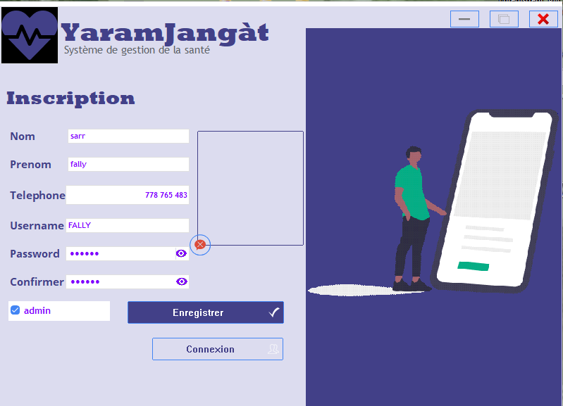
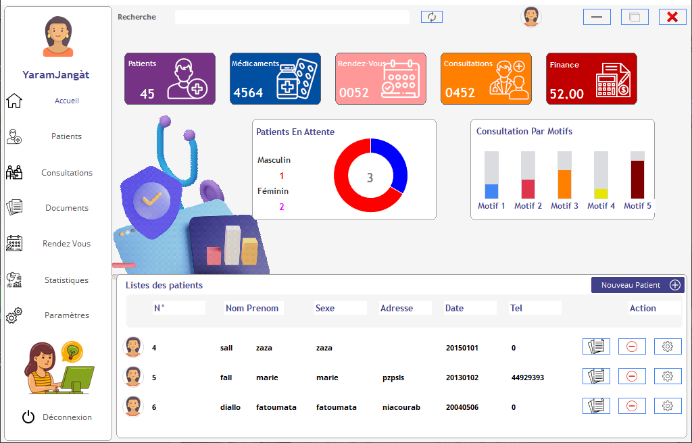
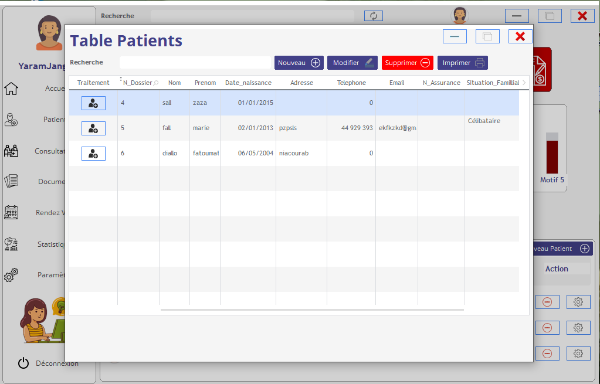
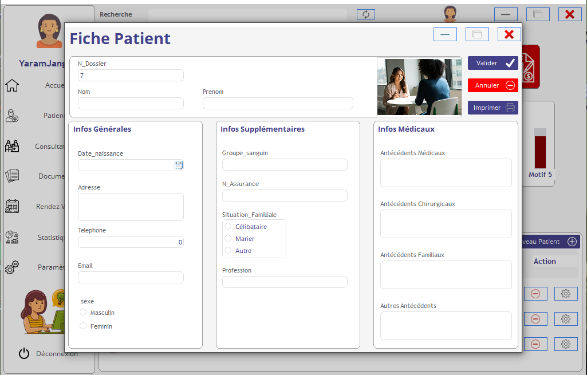
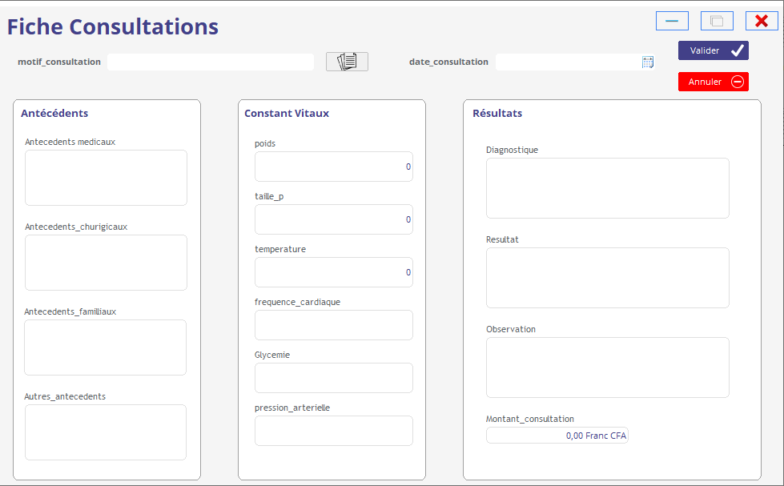
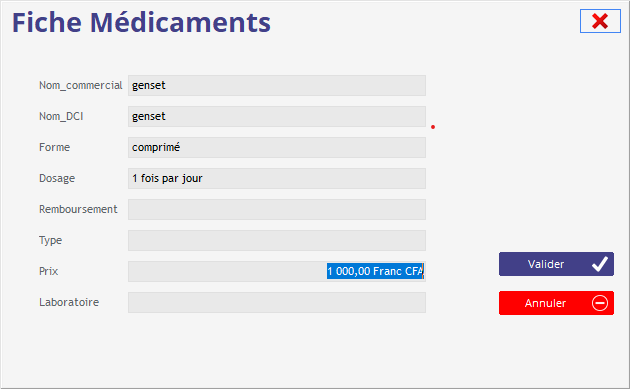
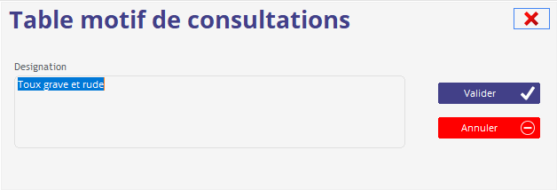
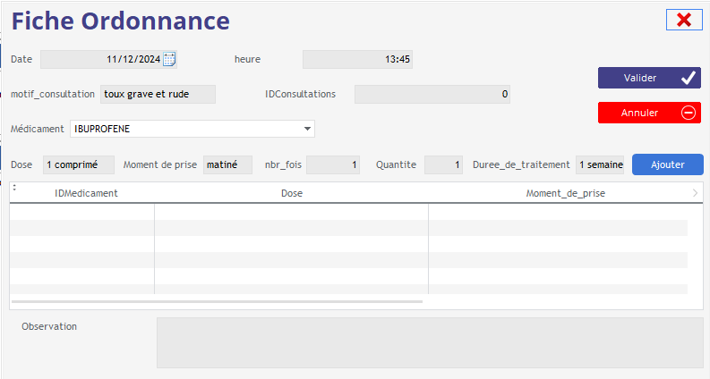
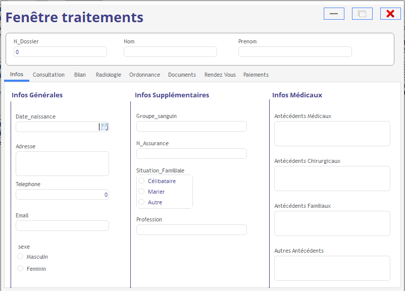

Découvrez les captures d'écran réelles issues du diaporama de soutenance de Licence. Ce projet présente une application de bureau complète développée sous WinDev pour informatiser les dossiers des patients, planifier les consultations et sécuriser les ordonnances.

Écran de Connexion
Fenêtre d'identification sécurisée permettant de filtrer les accès selon le profil utilisateur (médecin, secrétaire, administrateur).

Écran d'Inscription
Interface d'enregistrement permettant d'inscrire de nouveaux praticiens, secrétaires médicales ou patients dans le système.

Tableau de Bord / Accueil
Menu principal de l'application permettant aux médecins et à la secrétaire de visualiser les nouveaux patients et d'accéder aux outils.

Table des Patients
Fenêtre récapitulative permettant d'ajouter, modifier, supprimer et imprimer la liste complète des patients enregistrés.

Fiche Patient / Infos Médicales
Formulaire détaillé permettant de renseigner l'état civil, le groupe sanguin et les informations cliniques individuelles.

Fiche de Consultation
Formulaire permettant de saisir les motifs de consultation, les constantes vitales et autres données utiles lors de la visite.

Fiche des Médicaments
Fenêtre permettant d'enregistrer les informations de référence sur le médicament prescrit et sa posologie usuelle.

Table des Motifs de Consultation
Interface permettant de paramétrer la désignation et de structurer les différents motifs de consultation clinique.

Fiche d'Ordonnance
Formulaire d'édition permettant de rédiger, structurer et imprimer l’ordonnance médicale du patient après consultation.

Gestion des Traitements
Fenêtre de l'application permettant de rédiger, d'éditer et d'attribuer un traitement thérapeutique spécifique au patient.
Bilan & Améliorations futures (Perspectives)
Conformément à l'évaluation générale rédigée dans le mémoire de fin d'études, voici les perspectives de développement et les optimisations identifiées pour faire évoluer l'application :
-
Architecture Back-Office vs Front-Office (Portail Patient) L'application actuelle sous WinDev se concentre exclusivement sur le Back-Office clinique (les fonctionnalités destinées aux médecins et secrétaires). L'ouverture de l'accès direct en ligne aux patients (Front-Office) a été théorisée dans le mémoire et constitue le principal axe d'évolution future.
-
Exportation Excel des dossiers médicaux Ajouter un module permettant aux utilisateurs d'exporter l'historique complet de leurs dossiers médicaux sous format Microsoft Excel pour un usage personnel ou externe.
-
Notifications et rappels par e-mail / SMS Peaufiner et intégrer le service d'envoi automatique de notifications de rappel pour les rendez-vous à venir et pour les prises régulières de médicaments.
-
Système d'alertes en temps réel Finaliser le module de suivi des prescriptions avec des alarmes et des notifications push en temps réel pour alerter sur le moment exact de renouvellement des ordonnances.